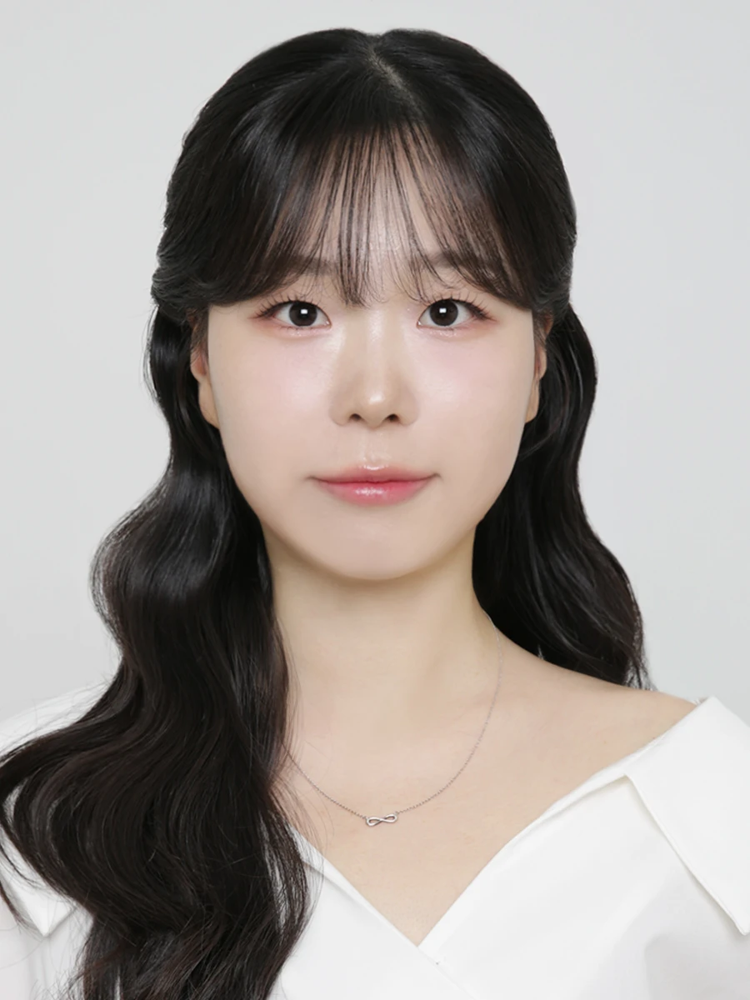

CJ주식회사
사내벤처 K컬처솔루션팀 · Contents Creative Director
방한 외국인 여행 플랫폼 On.K의 브랜드 전략 및 SNS 콘텐츠 총괄. 브랜드 아이덴티티, 메시지, 콘텐츠 편성 전략을 설계했습니다.
전혜준 · Content Marketer
브랜드 아이덴티티부터 글로벌 SNS, 디지털 캠페인과 브랜디드 콘텐츠까지. 브랜드가 고객에게 닿는 다양한 접점에서 전략을 구체적인 크리에이티브로 연결해왔습니다.

사내벤처 K컬처솔루션팀 · Contents Creative Director
방한 외국인 여행 플랫폼 On.K의 브랜드 전략 및 SNS 콘텐츠 총괄. 브랜드 아이덴티티, 메시지, 콘텐츠 편성 전략을 설계했습니다.
Non-Scripted IP사업팀 · 콘텐츠 솔루션
브랜디드 콘텐츠와 TV 광고 상품 기획. 광고주 발굴·제안부터 제작 커뮤니케이션과 PPL 실행까지 수행했습니다.
Creative Planning팀 · 카피라이터
디지털 캠페인부터 100억 원대 IMC 캠페인까지, 콘셉트와 키카피, 콘텐츠 아이디어를 개발했습니다.
2021 소셜아이어워드 식품 유튜브 분야 대상
2021 앤어워드 그랑프리 · 위너(Farm to table)
2020 대한민국 온라인 광고대상 크리에이티브 최우수상
2020 서울영상광고제 파이널리스트
2021 디지털 애드 어워즈 공공분야 최우수상
문화콘텐츠 융합전공
2018 광고홍보전람회 ‘Z세대란?’ 위원장
제1회 LUNA 뷰케팅 공모전 우수상 · LG유플러스 대학광고제 장려상